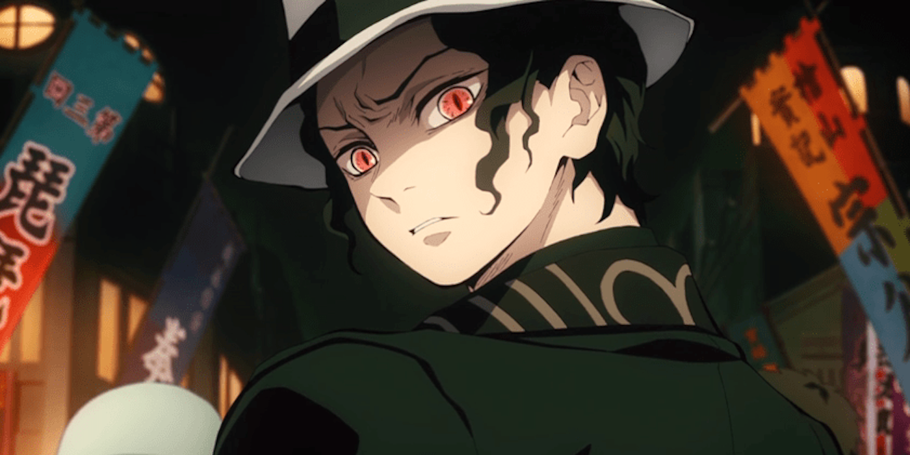
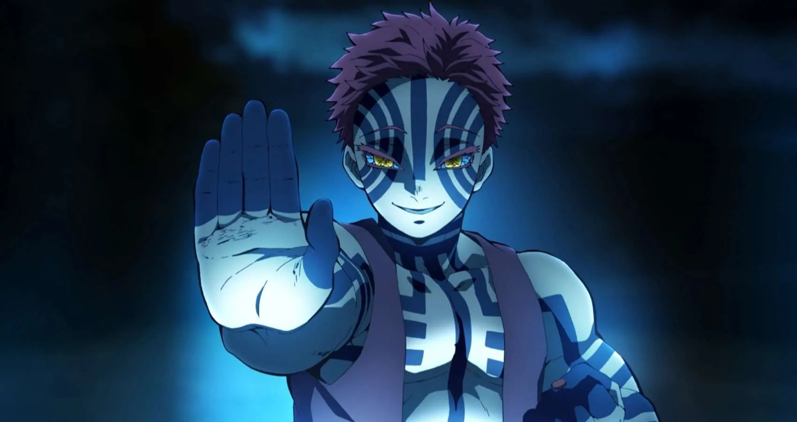
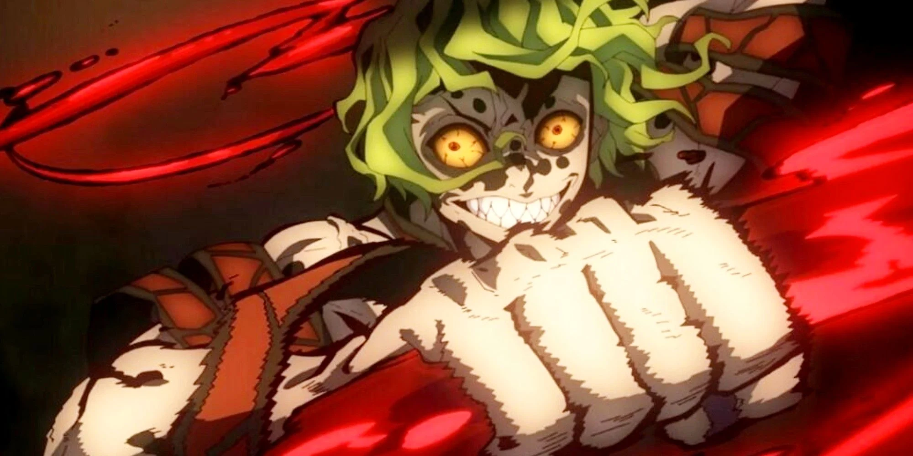
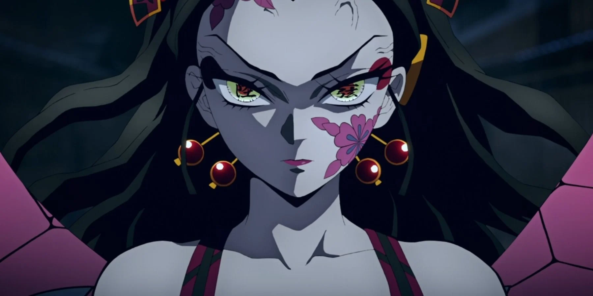
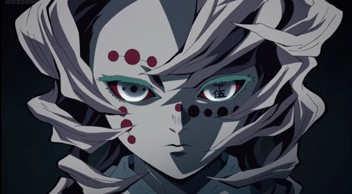
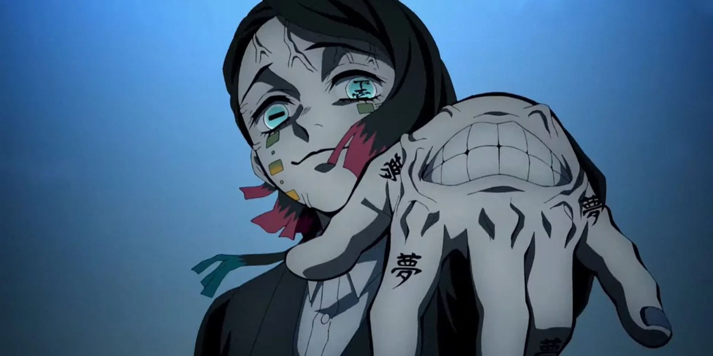

Muzan Kibutsuji
Muzan is cold-hearted, ruthless, intimidating, exceptionally intelligent, and the leader of all demons. He sees no value in any humans he has encountered and shows little value in his own subordinates. Rarely ever visually upset or happy, he appears completely monotone and detached on most occasions, even when he callously murders his own subordinates.

Akaza
Akaza is the upper rank 3 demon, a stubborn, harsh, short-fused and bloodthirsty fighter who desires to fight the strong, respects the strong and loathes the weak. He shows a particularly strong interest in powerful opponents and will try to figure out their names as a form of respect towards them and their might. As a result, he remembered the names of every single opponent he fought in his life as a form of respect towards them.

Gyutaro
Due to his disturbing childhood and traumatic experience, Gyutaro shows a disturbing and twisted view of the world and is cruel, jealous and petty towards anyone who lives a better life than him. Even so, Gyutaro shares a genuine, familial love and feeling towards his younger sister, Daki, a feeling that can be understood by Tanjiro Kamado himself, although his twisted view of world and overprotective attitude shaped Daki into a spoiled and childish sociopath.

Daki
Daki is a vain, cruel, hateful, and arrogant individual who takes enjoyment toying with her victims, and she seems to be very insufferable to failure, just like her master Muzan Kibutsuji. She also possesses a childish streak, due to being transformed into a demon when she was only thirteen years old, tending to throw tantrums towards anything that does not go in her own intentions.

Rui
Following his parents' failure to protect him, Rui became a disturbed and childish individual who desired the close bonds that a family has and expected family members to perform their own roles. To him, "family members" who do not perform their roles as he expects them to (namely to protect him unconditionally or follow his instructions) are worthless and as good as dead.
